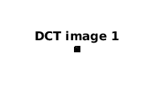
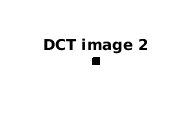
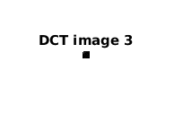
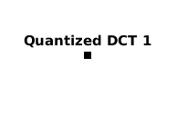
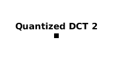
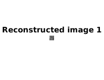
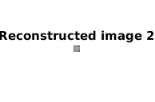

Contents
Code for observing the DCT, Quantized DCT and Reconstructed Image
function [] = q2()
path = 'LAKE.TIF' % Classical quantization matrix taken from the internet qMat = [16 11 10 16 24 40 51 61; 12 12 14 19 26 58 60 55; 14 13 16 24 40 57 69 56; 14 17 22 29 51 87 80 62; 18 22 37 56 68 109 103 77; 24 35 55 64 81 104 113 92; 49 64 78 87 103 121 120 101; 72 92 95 98 112 100 103 99]; image = imread(path);
path = LAKE.TIF
Selecting the three subwindows
part1 = image(45:52, 420:427);
part2 = image(298:305, 427:434);
part3 = image(230:237, 30:37);
Getting the 8 Point 2D DCT function
DCT = create_mat_dct();
Getting the DCT transformed windows
imDCT1 = myDCT(part1, DCT);
imDCT2 = myDCT(part2, DCT);
imDCT3 = myDCT(part3, DCT);
DCT Images
figure, imshow(uint8(imDCT1));
title('DCT image 1')
figure, imshow(uint8(imDCT2));
title('DCT image 2')
figure, imshow(uint8(imDCT3));
title('DCT image 3')
imqDCT1 = myDCT_quantization(imDCT1, qMat, 2);
imqDCT2 = myDCT_quantization(imDCT2, qMat, 2);
imqDCT3 = myDCT_quantization(imDCT3, qMat, 2);
   Quantized Images
figure, imshow(uint8(imqDCT1));
title('Quantized DCT 1')
figure, imshow(uint8(imqDCT2));
title('Quantized DCT 2')
figure, imshow(uint8(imqDCT3));
title('Quantized DCT 3')
  Reconstructed Images
figure, imshow(uint8(myIDCT(myDCT_dequantization(imqDCT1, qMat, 2), DCT)));
title('Reconstructed image 1')
figure, imshow(uint8(myIDCT(myDCT_dequantization(imqDCT2, qMat, 2), DCT)));
title('Reconstructed image 2')
figure, imshow(uint8(myIDCT(myDCT_dequantization(imqDCT3, qMat, 2), DCT)));
title('Reconstructed image 3')
  end
Comments
On observing the DCT matrix we find that almost all of the information is contained in the upper triangular matrix.